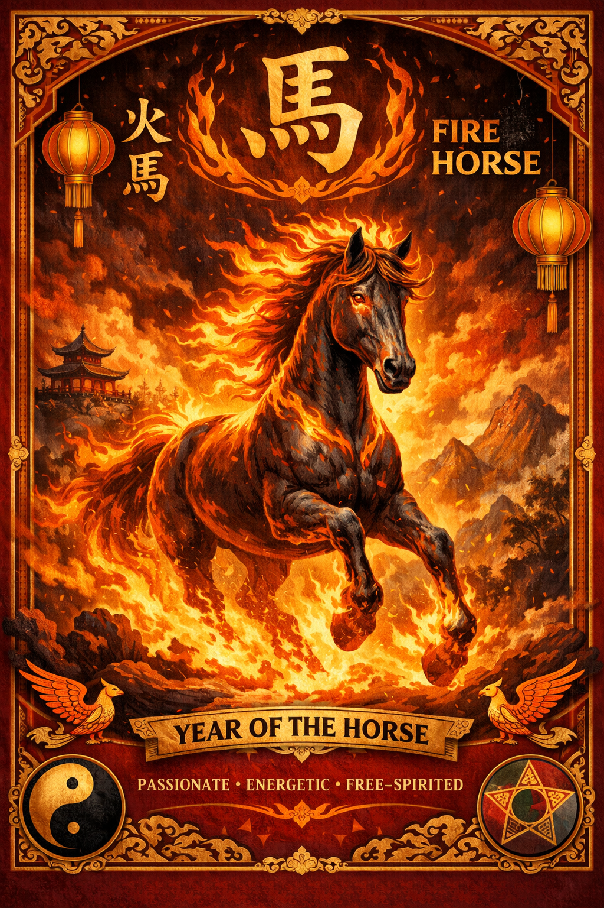

For the first time in 60 years, we've entered the Year of the Fire Horse. The last time was 1966. The next won't come until 2086. Most of us will only live through this once.
Why It Matters
In Chinese astrology, the Horse is already the most energetic, driven sign. Add the Fire element and everything intensifies — confidence, independence, restlessness, the need to move forward.
Fire Horse years have always carried a reputation for upheaval and rapid change. Things don't stay still. People don't stay quiet.
The Story That Haunted Japan
In Edo-period Japan, people believed women born in Fire Horse years were too strong-willed — dangerous to their husbands and families. The fear traced back to Yaoya Oshichi, a young woman executed for arson in the 1680s, born in the Fire Horse year of 1666.
That belief had real consequences. In 1966, Japan's birth rate dropped sharply — about 500,000 fewer babies were born that year. Couples deliberately avoided having children. Abortions rose. An entire generation of women wasn't born because people feared how powerful they'd be.
What This Year Asks of Us
Fire Horse energy isn't gentle. It pushes. It demands honesty about what you actually want and whether you're going after it.
But it also burns out those who act without thinking. This year rewards courage paired with intention — not recklessness. We won't see this energy again in our lifetimes. Worth paying attention to.